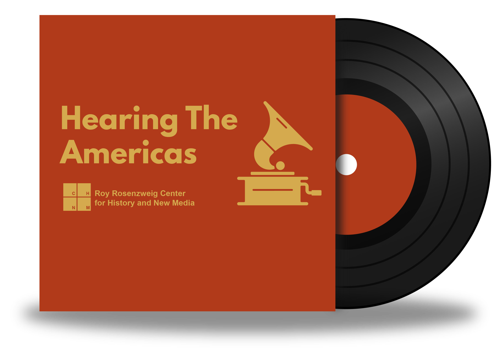

Hearing the Americas
explores the early decades of the recording industry (1898-1925), posing new questions about the origins of popular music.
Get StartedAbout
Get Started
The emergence of the record industry had a powerful impact on popular music, carrying songs and styles across national borders and pushing innovation in unexpected directions. These early recordings can sound very strange, since the technology was limited, and most of the genres we are used to did not yet exist.
This website provides multiple paths into this sonic world, revealing new perspectives on the history of this period.
Disclaimer
This site contains historical content which may be upsetting or offensive to some visitors. Please see the content notice for a full statement.
Explore
Styles
Check out the musical categories that accounted for many of the recordings sold in this period.
Artists
Some of these performers are still famous today. Many more you’ve never heard of, though they sold hundreds of thousands of records.
Spins
Test your knowledge with these questions about music at the dawn of the recording era. You may be surprised by what you find.
Notes
Explore the technical, commercial, and musicological aspects of the early record business.